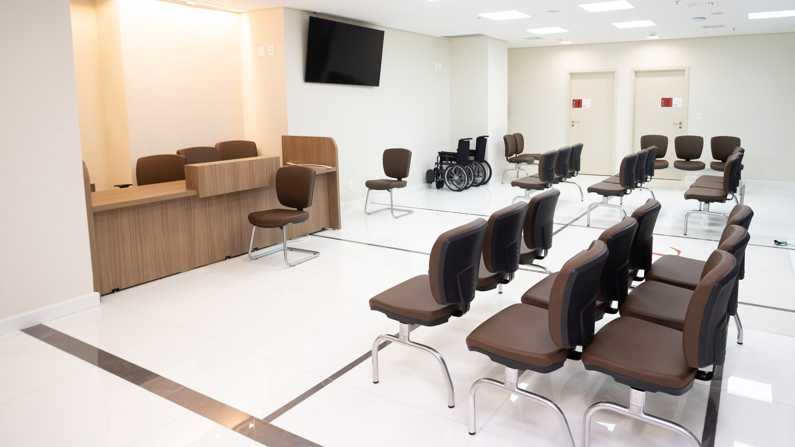
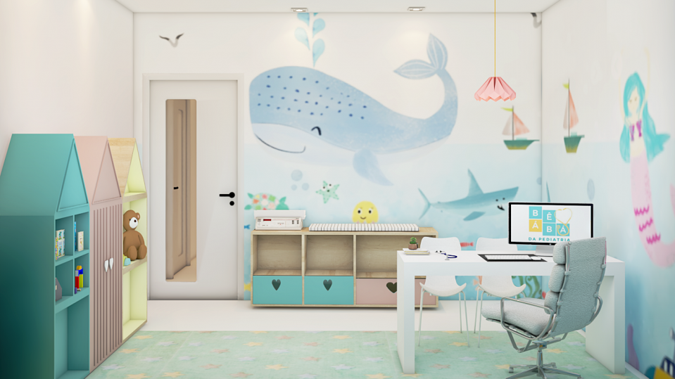
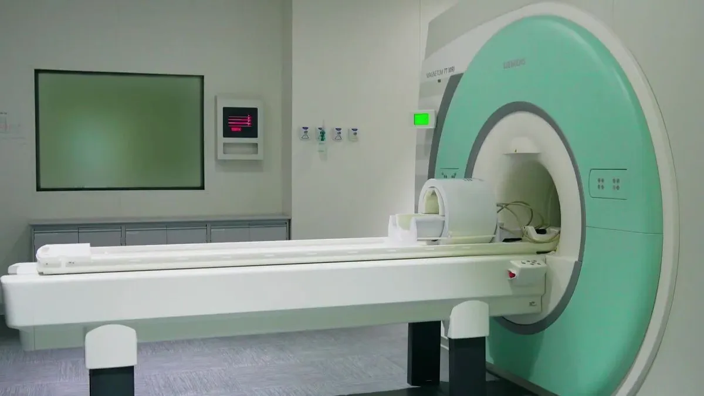
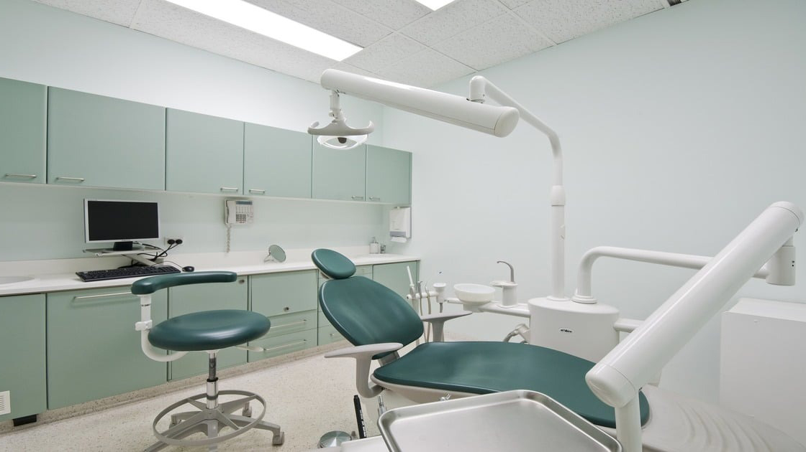
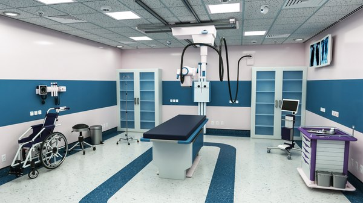
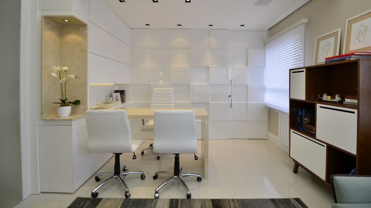
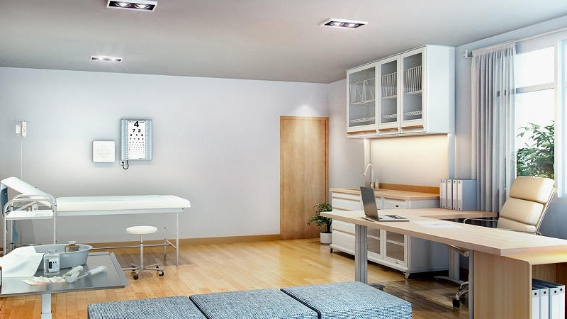
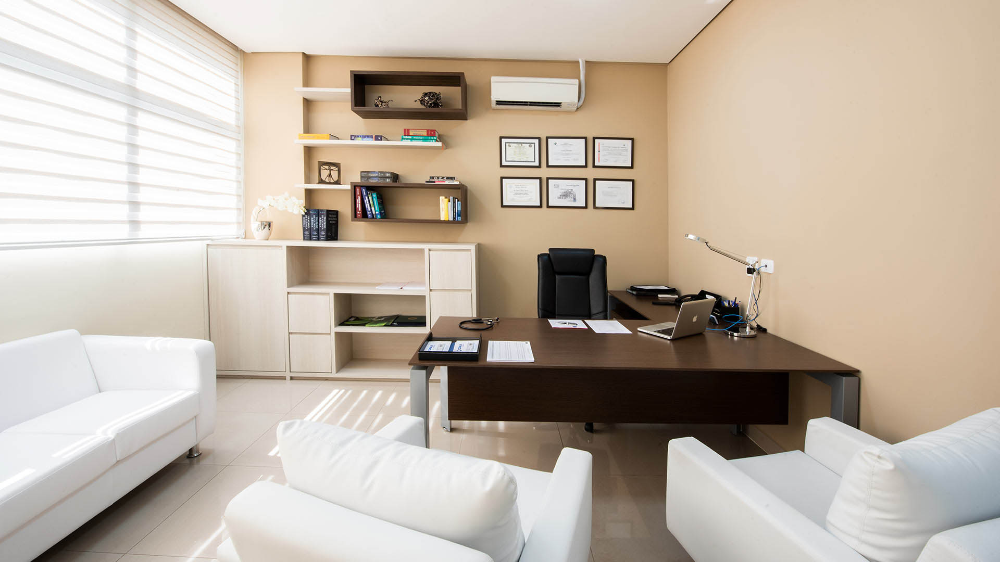
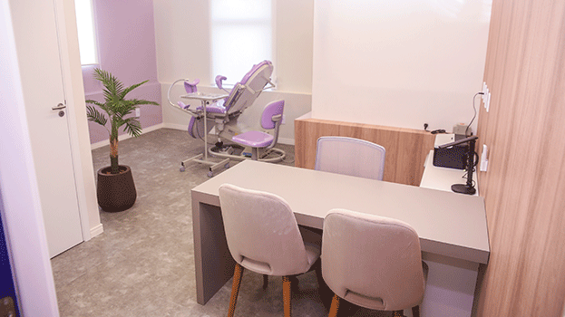
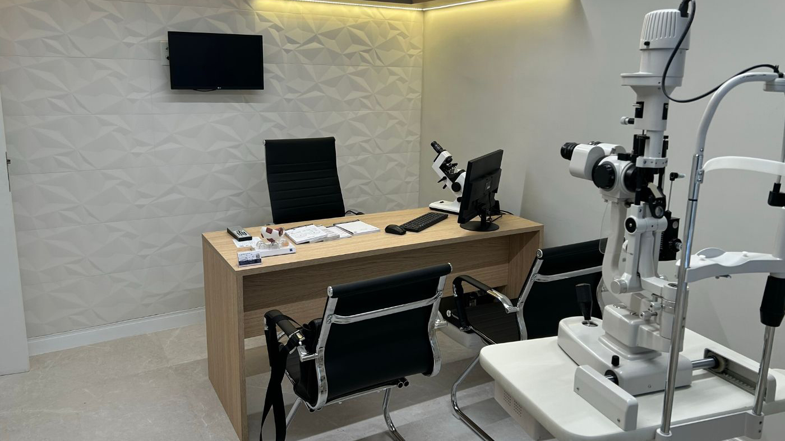

Nossa Equipe
Nossa equipe é composta por profissionais altamente qualificados e dedicados, incluindo médicos especialistas em diversas áreas da medicina, enfermeiros, técnicos de saúde e pessoal administrativo. Todos os membros da equipe estão comprometidos em fornecer o mais alto nível de cuidado e atenção aos nossos pacientes, trabalhando em conjunto para garantir o bem-estar e a satisfação de cada indivíduo que busca nossos serviços..
|  |
Nossos Consultorios
Nossos consultórios são espaços modernos e equipados com tecnologia de ponta para fornecer um ambiente confortável e seguro para consultas médicas e procedimentos. Cada consultório é projetado para atender às necessidades específicas de cada especialidade médica, proporcionando um ambiente acolhedor e profissional para pacientes e profissionais de saúde.
|  |  |  |
|  |  |  |
|  |  |  |